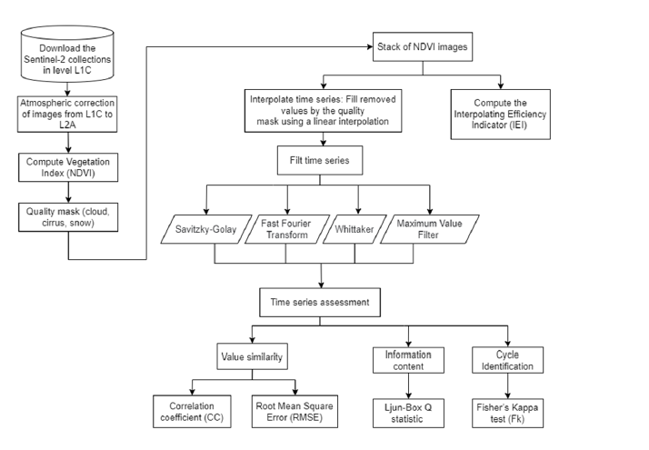
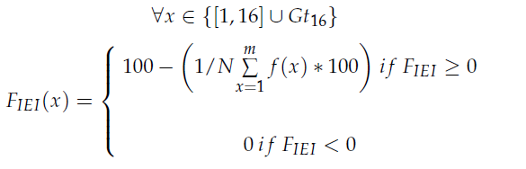
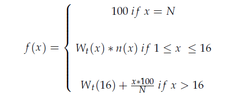

Análisis del contenido de información en series de tiempo de Sentinel-2 mediante IEI
Descripción
Este trabajo presenta un análisis del contenido de información en series de tiempo de Sentinel-2 utilizando técnicas avanzadas de Interpolating Efficiency Indicator (IEI) y análisis estadísticos complementarios. La investigación se enfoca en extraer y caracterizar la información espectro-temporal contenida en datos satelitales multiespectrales para aplicaciones de monitoreo geoespacial.

Metodología - IEI
La técnica de Interpolating Efficiency Indicator (IEI) es una metodología innovadora desarrollada para cuantificar y analizar la complejidad y contenido informativo en series temporales multidimensionales. La aplicación de IEI a datos de Sentinel-2 permite:
- Cuantificar la información disponible en cada banda espectral a lo largo del tiempo
- Identificar patrones de variabilidad temporal en diferentes períodos del año
- Integrar múltiples métricas estadísticas para un análisis comprehensivo
- Mejorar la caracterización de fenómenos geoespaciales complejos


Resultados y Aplicaciones
Los resultados del análisis IEI proporcionan información valiosa sobre:
- Patrones espectrales y temporales en datos de observación terrestre
- Optimización en la selección de bandas espectrales para aplicaciones específicas
- Mejora en la precisión de modelos de clasificación y predicción
- Mejor comprensión de la dinámica de la superficie terrestre
Referencias
Artículo publicado en Remote Sensing: